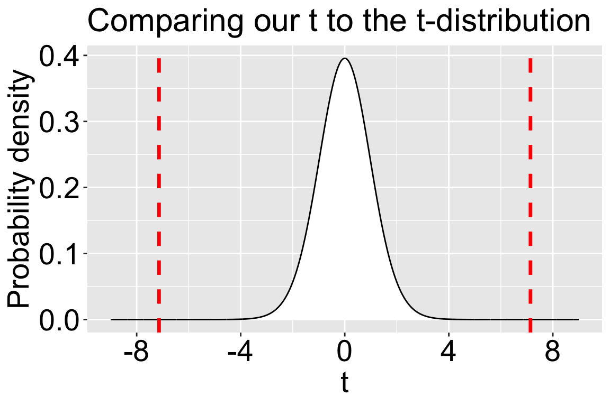

Motivating Example: We’ve summarized our data (with uncertainty) and checked our assumptions. Now we can conduct a formal hypothesis test. This section provides a step-by-step.
Learning Goals: By the end of this section, you will be able to:
List and explain the steps of a one-sample t-test.
Calculate a t-statistic from summary data.
Find the p-value for a given t-statistic and degrees of freedom using the pt() function in R.
Interpret the p-value to make a decision about the null hypothesis.
This feels weird. I would be shocked if you ever use the one-sample t-test in your research. That said, I feel good about teaching it in this course because understanding how the one sample t-test works will provide you the foundation needed to understand the more complex analyses that you will likely perform (or read about). So lets do it!
To conduct a one sample t-test we:
State the null and alternative hypotheses. This means you must say what \(\mu_0\) should be under the null.
Calculate the t-value as the difference between the estimated mean \(\bar{x}\) and its hypothesized value under the null \(\mu_0\) divided by the sample standard error, \(s_\bar{x}\). That is, \(t = \frac{\bar{x}-\mu_0}{s_\bar{x}}\).
Find the p-value as the probability, under the null t-distribution, of observing a value at least as extreme as the one from our data (i.e. the proportion of the t-distribution as or more extreme than our t).
You can do this with pt(): P-value = pval <- 2*pt(q = abs(t_value), df=these_df, lower.tail=FALSE).
We multiply by two because this is a two-tailed test.
Reject the null if our p-value is less than \(\alpha\). Otherwise, fail to reject the null hypothesis.
Note that when our t-value is greater than the critical t-value, the p-value is less than \(\alpha\) and we reject the null.
Write up your results.
Worked example
Let’s apply the one-sample t test to our elevational range shift data set.
Step 1. State statistical hypotheses
To start, let’s state the null and alternative hypotheses as we did when introducing the data:
Null Hypothesis (\(H_0\)): The true mean elevational shift (\(\mu\)) is zero. Any observed shift from our sample is due to random chance (\(H_0: \mu=0\)).
Alternative Hypothesis (\(H_A\)): The true mean elevational shift (\(\mu\)) is not zero. Species are, on average, shifting their elevation (\(H_A: \mu \neq 0\)).
Is the null really \(\mu = 0\)?
For the sake of our learning goals, we’ll assume the null expectation is \(\mu_0 = 0\) (i.e. species are equally likely to increase or decrease elevation). But that’s not necessarily a biologically realistic null without more evidence.
If all species started at low elevations, they would have nowhere to go but up.
If all species started at high elevations, it would all be downhill.
In a real analysis, I’d want to model the expected change in elevation based on the available habitat area, and use that as my null.
Step 2. Calculate the t-value
To calculate the t-value, we simply follow the equation:
mu_0 <-0# set the nullrange_shift_summary <- range_shift |>summarise(mean =mean(elevationalRangeShift),sd =sd(elevationalRangeShift),n =n(),se = sd /sqrt(n),df = n -1,t = (mean - mu_0) / se)
Step 3. Find the p-value
Plotting \(t_{30}\) and out t-value.
t_30 <-tibble(t =seq(-9,9,.005))|>mutate(prob_density =dt(x = t, df =30))ggplot(t_30, aes(x = t, y = prob_density)) +geom_area(fill ="white", color ="black")+labs(title ="Comparing our t to the t-distribution", y ="Probability density")+scale_x_continuous(breaks =seq(-8,8,4))+geom_vline(xintercept =c(-7.14,7.14), color ="red", linewidth =1.2,linetype=2)+theme(axis.title =element_text(size =21),axis.text =element_text(size =21), title =element_text(size =19))

Figure 1: The probability density function for a t-distribution with 30 degrees of freedom. The t-score is on the x-axis, and the probability density is on the y-axis. Dashed red lines show the value in our data.
We don’t need R to tell us this what we’ll do to the null, Figure 1 makes it clear that the p-value is very small. More generally,
When t is less than 1.96 (the critical Z-value) we will fail to reject the null.
When t is greater than 2.5 (and our sample size is greater than seven) we will reject the null at the traditional \(\alpha\) value of 0.05. Here t is much greater than two and a half (it’s seven) and our sample size is way more than seven (it’s thirty one) – we will reject the null.
When t is between 1.96 and 2.5 we may or may not reject the null depending on the degrees of freedom and the value of t.
But let’s find the p-value anyways:
# Our p-value2*pt(7.14, df=30, lower.tail =FALSE)
[1] "6.08e-08"
Step 4. Make a decision
Our p-value is minuscule. We reject the null hypothesis. Only one in fifteen million samples from the null distribution would have generated a t-statistic with an absolute value of 7.14 or more.
Step 5. Write up
Let’s work on writing these results. A write up should include the biological motivation, study design, sample summaries, effect sizes, test statistics, p-values, and what we do to the null. Here is a short version:
On average, species have shifted their range to higher elevations, with a mean shift of 39.3 meters, a standard error of 2.21 meters, and a 95% confidence interval between 28.1 and 50.6 meters. Although there is some variability among species (sd = 30.7), this variability is overshadowed by the overall trend toward higher elevations (Cohen’s d = 1.28 – A very large effect size). Such a large shift is highly unlikely under the null hypothesis (t = 7.14, df = 30, p = \(6.06 \times 10^{-8}\)). This result is not driven by the UK samples, which make up half of the dataset - we observe a similar result (mean = 48.6 meters, 95% confidence interval between 27.5 and 69.7 meters) after excluding them.